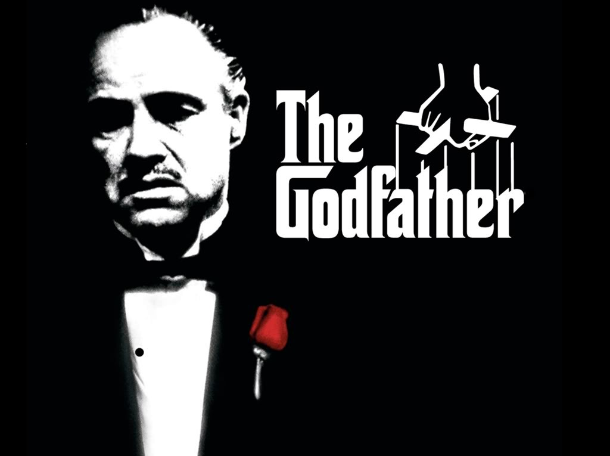
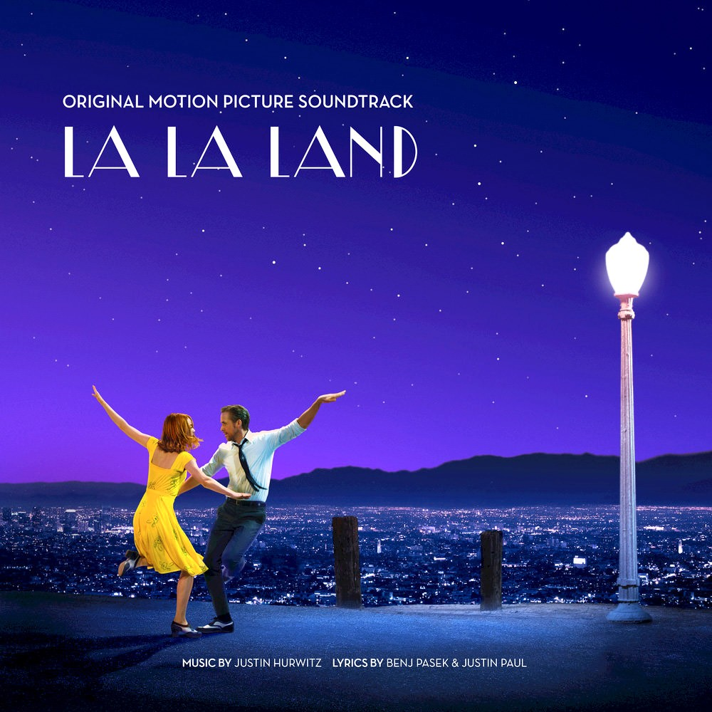
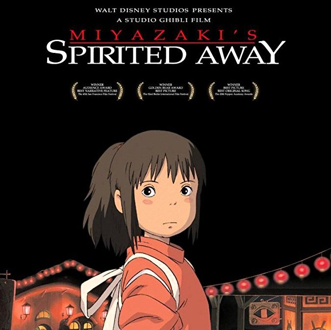

Food Science new graduate at McGill University (May 2018). Currently completing an intensive Web Development program at Le Wagon Montreal. Seeking a full time job starting September 2018 in Product Development, Web Development, R&D, Product Management and Consulting worldwide. Native in French, fluent in written and spoken English. I have a strong desire to learn as well as a sense of ownership, teamwork, and work ethic. Looking for new challenges and opportunities to learn and grow both professionally and personally.
|  |
1972 - The GodfatherWidely regarded as one of the greatest films of all time, this mob drama, based on Mario Puzo's novel of the same name, focuses on the powerful Italian-American crime family of Don Vito Corleone (Marlon Brando). When the don's youngest son, Michael (Al Pacino), reluctantly joins the Mafia, he becomes involved in the inevitable cycle of violence and betrayal. Although Michael tries to maintain a normal relationship with his wife, Kay (Diane Keaton), he is drawn deeper into the family business. |

2016 - La La LandSebastian (Ryan Gosling) and Mia (Emma Stone) are drawn together by their common desire to do what they love. But as success mounts they are faced with decisions that begin to fray the fragile fabric of their love affair, and the dreams they worked so hard to maintain in each other threaten to rip them apart. |
|
|  |
2001 - Spirited AwayIn this animated feature by noted Japanese director Hayao Miyazaki, 10-year-old Chihiro (Rumi Hiiragi) and her parents (Takashi Naitô, Yasuko Sawaguchi) stumble upon a seemingly abandoned amusement park. After her mother and father are turned into giant pigs, Chihiro meets the mysterious Haku (Miyu Irino), who explains that the park is a resort for supernatural beings who need a break from their time spent in the earthly realm, and that she must work there to free herself and her parents. |